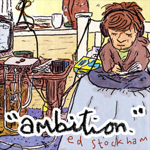

click on an album or scroll down


jellyfish
i saw a bag in a tree that looked sad
it was dancing around in the breeze
a man on the television said that jellyfish
can live forever it seems
they're kinda like plants
they die and come back
and then one day wash up on the beach
and at night time they glow
and light up the sea
it's kinda fantastic
like street lights through plastic
dancing around in the breeze
^back to album
ufo
i wanna be marty mcfly
i wanna feel like robin hood
with glitter on my trainers
and i'll grow my own fast-food
and i'll hack the wi-fi cranial
and learn to talk to animals
so when the robots come to kill us
i'll be riding on godzilla
oh
a UFO
has landed in my train of thought
and come to take me home
and oh
the stickers on my phone
have almost all come off
and i'd forgot what it looked like before i put them on
and planet earth is spinning
in the back seat of a car
and out the window aeroplanes
look just like shooting stars
oh, but i'm not wishing anymore
cos my hands turned to monkey paws
from rubbing an infinity
of russian-nesting lamps and genies
oh,
a UFO
has landed in my train of thought
and come to take me home
and oh
i got new stickers for my phone
and even though i know
it won't be ong before they're gone
i'll still put them on and on and on
^back to album
jumper
i've got a jumper, its grey and maroon
it's got baggy sleeve and it smells like my room
and i think it's growing, unless i am shrinking
and sometimes out the corner of my eye, i see it breathing
chorus
my jumper's alive and it's doubling in size
better run, better hide
cos my jumper, my jumper's alive
i've got a jumper and it keeps me warm
in cold weather, together, we meld into one
and i think it's eating the things in my room
and somehow it is using them to make more wool
chorus
and i think my jumper is hatching a plan
to keep eating and growing as much as it can
and when it's of size it'll cover the skies
they'll be no place to hide
cos we'll all be trapped inside of my jumper
my jumper, my jumper, my jumper's alive
(aaaaaaaaaaaaaaahhhhhhhhhhh)
i've got a jumper, it's grey and maroon
it's warm and it's cosy and smells like my room
and i think it's growing, and i hope i'm not wrong
cos then i could share my jumper with everyone
^back to album
stink
there's a stink here
and it smells like something dead
and i'm worried that it's me
and it gets stronger by my bed
so maybe i died in my sleep
and i just haven't noticed yet
chorus
and the sun goes down a little later in the evening
and the cigarettes go down a little faster in the day
morning comes a-rolling past the window as you draw the curtains
and before you know, tomorrow looks like yesterday
and i should do some laundry
cos i'm running out of jumpers
but the weather's getting warmer
so i think that i can bump it
down the list of all the things
i've got to do over and over
chorus
and my brain's become obsessed
with looking back at what is gone
and all the things that i can't change
because what's done is done is done
but i guess it's that regret
that keeps us on the road we're on
chorus
^back to album
give my love to the sea
give all my love to the sea
let it ride up on the waves
let it coast along the headland
let it get caught in the caves
and let it sail to the horizon
far away from me
just promise that next time you're down by the shore
that you'll give all my love to the sea
^back to album
pins and needles
lately i've had pins and needles all over my body
there's a lack of blood inside me and it's making me feel dizzy
i don't know where my blood has gone to
i have got no open wounds so
how my blood escaped is such a mystery
and someone told me lately that my heart's just being selfish
that it's holding all my blood inside and doesn't want to share it
and my arteries and veins will dry
arms and legs and head'll die
and everything around my heart will perish
but lately i've been thinking that if that is the case
maybe my heart's just being smart and saving for a rainy day
and my heart's not being selfish
it's just building up in strength
so when there comes something to love my heart is ready
cos lately i've seen pins and needles everywhere i go
there's a lack of something in the wind that's blocking up the blow
but i want to feel love again
so i can feel my blood and then
i'll open up my heart and let it flow
and until that comes along my heart will grow
^back to album
halloween
i woke up at four this morning
but they changed the clocks back so i really woke at five
and i can't get the internet working
and i really wanna get this video finished in time
for halloween
halloween
and all day i've felt kinda dizzy
and i found an uncooked chicken leg just lying in the yard
and i admit i wasn't listening
when they called to say i got the job and start
the day after halloween
halloween
and now it's mid november and the chicken leg has gone
it eroded in the rain but now has come back in this song
along with all those tiny things i'd have forgotten otherwise
and that satisfying feeling that i got the video finished in time
in time for halloween
^back to album
i don't know what it is
hurts like hell
it's black and blue
and yellow, orange, red
it pierces through my stomach
and washes round my head
it's warm and it is comfortable
and dangerous as fire
it makes me wanna run away
and also stay a while
chorus
i don't know what it is
i don't know what it is
i don't know what it is
that makes me feel this way
i don't know what it is
i don't know what it is
i don't know what it is
but it's okay
and i just wanna scream
and let out a battle cry (AAAAAAH!)
set my legs on fire
and then fly into the sky
bury myself underground
til bark grows on my skin
and sit there for forever
just breathing in the wind
chorus
and any moment now
a thousand flies behind my eyes
will popcorn into fireworks
and it'll be alright
and i've been given powers
that can show me at my best
but i can't shake the feeling
they were meant for someone else
i don't know what it is
i don't know what it is
i don't know what it is
that makes me feel this way
i don't know what it is
i mean, i do know what it is
and if you know what it is
then i hope that that's okay
^back to album
lightbulb
i left my phone in the office
tomorrow i have got to go to school
but i don'tknow where the school
i've a pizza in the oven
and the nights are growing cooler
and the lightbulb in my bedside light exploded
and i caught a cold and so did everybody in the office
and the main lights are too bright -
they're the opposite of cosy
but they're making pretty colours
in the bubbles in pepsi
and i guess that i'll just take a guess
at where to find the school
unless i get a message back
from tom about it soon
and once i'm finished with this pizza
i'll go out and buy a lightbulb
but because it is the screw in kind
i'm worried they won't have one
and i won't be in the office
for at least another day
but i don't mind being phoneless
so i guess that that's okay
and the lightbulb in my bedside light exploded
and my cold has nearly cleared up
although i still wake up coughing
and the main lights are too bright
and i can't tell that it's night
but there's colours in the bubbles in my pepsi
^back to album
blue
i'm feeling blue
like lightning when it strikes it flashes blue
like fire when it's really hot turns blue
like the veins under my skin that parts of heart are carried in
keeps me fighting, keeping me light and keeps me blue
and you're blue too
like a cliche in the moonlight, you are blue
like a kid who held his breath til he turned blue
like the sky and like the sea you fill in all the inbetweens
you're the glue that keeps us true and you're blue
and together we'll shoot lightning cross the skies and through the seas
and put fire in the belly of the kid who wouldn't breath
and we'll drain our veins of moonlight and fill our hearts with glue
and stick it to the world and turn it blue
and stick it to the world and say fuck you
and we'll stick it to the world because we're blue
^back to album
rubble and rain
a fire that started in somebody's garden
is making it's way across town
all the streets are in flames and the building's a-blaze
and everything in it's wake is burnt to the ground
and you'd expect panic, but people are dancing
dancing in the light of the fire
and you can call them insane and say they're asking for pain
but you cannot deny it's inspired
and a rain cloud that came from the place it was made
opens up and starts to put out the fire
and the people are soaked now and the fire's just smoke now
and soggy clothes and burnt out homes are all that remains
and used expect sadness, but people are laughing
laughing in the rubble and rain
and you can say that they're hurt and say they're laughing from nerves
but laughter is laughter
all the same, all the same, just the same
^back to album
flashing lights
flashing lights on the bridge
flashing lights from the cars
flashing lights on the river
flashing lights from the stars
flashing lights at the window
in the place where i sat
flashing lights on the street
and flashing lights in the flat
flashing lights on the shelf
and at the top of the stairs
flashing lights on your t-shirt
flashing lights on the ceiling
we could take it as omen
we could see at signs
we could make it symbolic
it could be more than lights
flashing lightning and thunder
flashing lights from the sun where
it goes through the trees
and we go past on the bus
flashing lights on the ceiling
could mean all kinds of things
but we're so wrapped in a feeling
it doesn't mean anything
flashing lights on the ceiling
flashing lights on your t-shirt
oh, it's a schrodinger's cat
cos all the things that have happened
have both happened and not
and now the lights are all off
and now the lights are all on
and now the lights are all off
and they're on and they're off and then on and there's
flashing lights on the bridge
flashing lightning and thunder
flashing lights out at sea
crashing waves we go under
thrashing aimlessly, wondering
when it's all over
will we be left wondering, wandering
flashing lights on the bridge
flashing lights from the cars
flashing lights in the window
flashing lights in the stars
flashing lights in the river
in the place where i sat
flashing lights on the street
and flashing lights in that cat
flashing lights on the shelf
and at the top of the stairs
flashing lights on the ceiling
flashing lights on your t-shirt
flashing lights on your t-shirt
^back to album
plant
i put a plant inside my room
it's mostly leaves, the flowers yet to bloom
and it breathes in
what i breathe out
and it breathes in
what i breathe out
and it breathes out what i breathe in
we were meant to be together
and i put some pictures on my wall
some are big and some are small
and all of them are things i love
and want to be around
things i love
and want to be around
i want to be around all of the things i love
because they make me feel much better
and while it's easy being honest with your friends
it's not as easy being honest with yourself
cos we get caught up in the patterns
of things we've taught ourselves to like
ignoring changes that have happened
as we meander through our lives
and the pictures on the wall seem very old
and i'm not sure i like them anymore
i put a plant inside my room
it's lost it's leaves but now the flowers are in bloom
and it breathes in
what i breathe out
and it breathes in
what i breathe out
and it breathes out what i breathe in
nothing lasts forever
^back to album
cyclops in the sky
i was staring at the sky
making stars inside my mind
putting pressure on my eyes
until my retinas are fried
and the stars go back to space
i made a cyclops of your face
by pressing my nose up to yours
until our eyes began to cross
and just like planets, they align
just like the stars inside my mind
they burnt an image in my eyes
a ghost reminder made of light
so when the stars don't shine
they'll always be
a cyclops in the sky
^back to album
counting
i counted 17
i counted 23
i counted 212
i don't know what i'm counting
but it seems to keep me grounded
i'm up to 412
my hands look very small
have they even grown at all since
i learnt to tie a show myself
i counted 23
i counted 17
i counted 612
i don't know what i'm counting
but it seems to keep me grounded
maybe ill stop at 1000
i cut my finger on
a shelf at a restaurant
grossed out the people sitting next to us
i counted 17
i counted 23
i counted 812
i don't know what i'm counting
but it seems to keep me grounded
i stop at 1012
^back to album
the wind
i can hear the wind
in the rustling
in the rustling
the rustling of leaves
and i can feel the wind
through the holes in
through the holes in
the holes in my sleeves
and i can breathe the wind
in the morning
in the morning
at the break of the day
and i am not the wind
but i will be going
i will be going
going the same way..
^back to album
magpie
magpie sitting in a tree
magpie, what is it that you see?
can you see the blue skies
and clouds that are so high
can you see the magpie flying in the sky?
magpie flying in the sky
magpie, what is it that you spy?
can you see the tree tops?
can you see the leaves?
can you see the magpie sitting in the tree?
magpie sitting in a tree
magpie, what is it that you see?
can you see the future?
do you ever dream?
can you see the magpie flying from the tree?
magpie flying in the sky
magpie, what is it that you spy?
do you have a third eye?
do you have memories?
remembering the magpie sitting in the tree
^back to album
skateboard
i've got a skateboard and it only cost a fiver
and racing down the streets on it
it made me feel aliver
than i'd ever feel again
and i ever felt before
flying down the street on my skateboard
but then it broke, and i lost two wheels
and it's hard just to describe to you exactly how that feels
when your skateboard breaks, right down the trucks
and i must confess the best i can explain is that it sucks
oh, but this devastating incident isn't something new
so i brought the board back home and so i guess that that makes two
cos i broke this skateboard like i broke the one before
now i have two halves of a skateboard
but i'll fix it up, and i'll ride again
cos two halves of a skateboard, oh, together they make one
i'll fix it up, it'll be the best
and i hope that i don't break this one just like i did the rest
oh, i've got a skateboard and it only cost two fivers
and racing down the streets on it
it made me feel aliver
than i'd ever feel again
and i ever felt before
flying down the street on my skateboard
flying down the street on my skateboard
i really hope that i don't break my skateboard
^back to album
cardboard shoes
i was tired of socks
and getting rocks stuck between my toes
tiny stones from everywhere i'd go
so i made some shoes
and decorated them with lots of cartoons
i made them out of a cardboard box
and put them on to protect myself from rocks
but cardboard shoes may stop you feeling pain
but cardboard shoes don't stand up in the rain
cardboard shoes are never gonna last
and i'm starting to miss the feel of grass beneath my feet
^back to album
burton holmes
there's a guy i'll never know because he's dead
and his name was Burton Holmes and now he's dead
and he travelled round the world
making videos
and he sold them at his shows and now he's dead
and with a camera in my hand
i tried making videos
and i walked down to the bus stop
and gave travelling a go
i saw London in the sun
i saw Bristol in the snow
and i saw my pockets empty
and i had to go back home
and lately i have hated every video i've made
and travelling on holidays just doesn't feel the same
and i've been thinking of just setting off
and getting on a plane
to L.A. California to find Burton Holmes' grave
and standing on his skeleton and looking at his stone
i'll see he lived for almost 80 years
while i'm just 21
so i guess it doesn't matter that i'm still getting things wrong
cuz really i'm still growing up
and the best is yet to come
and it doesn't matter that Burton Holmes' dead
cuz others carry on for him instead
people still play shows
and make videos
and they still travel round the world
and they're not dead...
^back to album
little bee
it's probably just nothing
but i thought i heard a buzzing
and i think that there's a bee in my room
i don't know how she got in
there's no doors or windows open
but hopefully she'll find her way out soon
it's not that i am frightened
i just worry that she'll die in here
my room is not an ideal place to be
there isn't food inside here
but there's definitely spiders
so i really hope that soon she will be free
chorus
oh little bee
just keep trying and be brave
soon you will be free
don't make the window sill your grave
now i hope that she is fine
and that she hasn't seen the flies
that are dead and lying on the window sill
cos it's such an awful sight
that it could fill her full of fright
or at the very least, make her feel quite ill
and if she starts to panic
it could make her actions manic
then escaping would be much more difficult
and if she's bouncing off the walls
it would be easier to fall
and she'd become a crippled bee as a result
chorus
now i really can't be certain
but right there on the curtain
i think i saw a spider climbing up
and if the bee's inside the curtain
that the spider's climbing
then the spider will be having her for lunch
but i hope that if she's caught
then she can turn it into sport
and that she's not the sort to fall without a fight
and she'll send the spider spinning
with just one flap of her wings and
then she'll effortlessly find her way back out
chorus
now i no longer hear a buzzing
but it probably was nothing
and there probably wasn't even a bee
just the sound of some machine
teamed up with my imagination
but i really hope that soon she will be free
^back to album
monster on my shoulder
there's a monster on my shoulder
there's a monster on my shoulder, can't you see?
can't you see?
there's a monster
and sometimes the monster says something that's real stupid
and you turn around and blame it on me
but it wasn't me
it was the monster
on my shoulder
there's a monster on my shoulder, can't you see?
can't you see?
there's a monster
and sometimes the monster pushes down on my shoulder
makes me fall down
and you turn around and say that i'm clumsy
but i'm not clumsy
it was the monster
on my shoulder
there's a monster on my shoulder, can't you see?
can't you see?
there's a monster
and sometimes the monster stops me from saying hello
and it seems as though i don't like you
but that isn't true
there's just a monster on my shoulder
there's a monster on my shoulder, if only you knew
if only you knew
about the monster on my shoulder
there's a monster on my shoulder, can't you see?
can't you see?
it's not me
^back to album
pick up a pen
let's start a revolution
let's get rid of complication
and those academic dicks who make technique a competition
and let us all go back to playing simple chords
to when other people cared about other people's words
and we could all write songs and even though we writ them wrong
everyone would listen and everyone would sing along
chorus
so pick up a pen
or a guitar or a bicycle
you don't have to be amazing to do something incredible
you don't need to be good
just cos they tell you you should
just fill your life with feeling and do things that are cool to do
cos there's not a kid in the whole wide world who can't draw
but then they grow up and they stop and say they can't anymore
and people don't play music cos they think they'll be shit
but it's not how well you show off
it's what you get out of it
chorus
and the brightest of fish live in the darkest of places
and the prettiest of people have the ugliest faces
and you could be content
but i don't think that's true
you're just another person bored, looking for something to do
so why not pick up a pen
or a guitar or a bicycle
you don't have to be amazing to do something incredible
you don't need to be good
just cos they tell you you should
just fill your life with feeling and do things that are cool to do
pick up a pen
or a guitar or a bicycle
you don't have to be amazing to do something incredible
you don't need to be good
just cos they tell you you should
just fill your life with feeling and you'll soon be invincible
^back to album
sea monster
there's a sea monster and she lives underwater
and her vision's distorted by the ceiling of water
that is swimming above her
and when she looks to the sky
it doesn't look like it oughta
it just looks like more water in the eyes of the monster
chorus
and she says there's more fish in the sea
but i don't trust her
when she's sent her whole life living underwater
and she's never seen a bird or a bug or a rodent
and her whole wide world's wrapped up in the ocean
underwater
the sea monster tried to get out the water
but got caught in the current and moved back with her parents
so she's still underwater
and when she looks to the sky
it's like a gleaming nirvana
but her vision's distorted by the ceiling of water
chorus
there's a sea monster and i hope that she finds a
boat that will take her out to some kind of island
away from the water
chorus
sea monster get on a boat / sea monster get out of the water
^back to album
just another day in december
i don't want christmas
i hope you understand
instead let's just go outside
and i'll take you by the hand
lead you up a mountain
show you snow coming off the trees
and we'll watch the sunset
melt the frozen seas
chorus
it's just another day in december
but let's make this one to remember
phone up everyone that we know
we'll go ride our bikes in the snow
it might not be the kindest of weather
but at least we'll all be together
let's forget it's christmas
and just go have some fun
i don't want christmas dinner
it's much too much
i'd rather watch a shitty film
and eat sugar puffs
and the only present that i'd like
is a hug from you
just to rove that love exists
and i'll hug you too
chorus
let's just for get it's christmas and have some fun
^back to album
we're gonna die
chorus
oh my! we're gonna die
we're gonna smoke our pockets dry
thinking that's how we'll get by
and we'll survive
but then in time
we're gonna die
we're always worrying about the future
always dwelling on the past
but never thinking bout the now
because the present never last
but it's now that take our money
and it's now that takes our sense
but it's also now that takes the piss
and now that takes the chance
and that past we always think about
the now is where it's from
and when you think like that
the tenses all roll into one
chorus
and the things get more expensive
as the jobs give better pay
then the jobs all stop
and the expenses stay the same
and the moths inside my wallet
they have no concept of wealth
and the butterflies inside my lungs
have no concept of health
and there's no use in fretting
getting scared of what comes next
cos we all know the ending
just be thankful for the rest
chorus
and you can waste some hours telling people life is short
and you can waste days, months and years, begging for some more
and you could spend a lifetime wishing that you'd had more fun
but they'll always be more time
cos life's so goddam long
chorus X2
^back to album
2 years ago
about two years ago when the notebook i carried was red
no holes in my jeans and a whole lot of a dreams in my head
sat on a train with my life in a bag by my feet
and the music in my headphones making me one with the seat
watching the windows changing the form of the land
as the trees turn to buildings and pavements rise up from the sand
and the smells of the city seep in through the holes in the walls
fill my nose with adventure like nothing that i've smelt before
but it's now 2 years later and my head is stuck in this frame
sat at a windowsill racing the droplets of rain
but the drops, they have stopped, and don't look like they'll start up again
and i'm sat at a windowsill wishing i was back on that train
the back of the bus is flooded with light from the sun
shedding light on my head and the memories of things that i've done
heading west at a guess on this road cos who knows where it ends
it may lead to success, it may lead to the bestest of friends
it may lead to danger, it may lead to a hole in the ground
but that's the adventure so wherever i'm lead, i am bound
and the sounds of the bus make vibrations that i feel inside
a rumble in the left of my chest that means i'm alive
but it's now 2 years later and my head is filling with dust
sat at a windowsill racing the droplets of mist
but the drops, they have stopped, and it looks like they've had enough
and i'm sat at a windowsill wishing i was back on that bus
i took down the posters and photographs from my wall
put them in a pile with the rest of my things on the floor
and i took down the seats - made them flat in the back of dad's car
and piled on top all the things i would need for the year
and as we took to the road, took one last look at where i grew up
at the trees and the mountain, the school and the pump and the shop
we talked as we drove and we made jokes and we laughed
as we took the piss out of the big army trucks that we passed
the sun it was shining as the car came to a slow
and we pulled up outside of a place i would call home
but its now 2 years later and i'm stuck hugging a guitar
sat at a windowsill racing drops lit up by stars
but the drops, they have stopped, despite not even getting that far
and i'm sat at a windowsill wishing i was back in that car
but it's now 2 years later and my head is stuck in this frame
sat at a windowsill racing the droplets of rain
but the drops, they have stopped, and don't look like they'll start up again
and i'm sat at a windowsill wishing i was back in that car, on that bus, on that bike, on that plane, on the back of that horse, on that train
on that train
^back to album
creepy eyes
creepy eyes
creepy eyes
creepy eyes that see insides
x-ray vision
x-ray vision
x-ray optical incision
creepy eyes - you've got one
creepy eyes - you've got two
creepy eyes - see my bones
creepy eyes - see my poo
inside my digestive system
with your creepy x-ray vision
^back to album
nostalgia junkie
i'm turning back the clock
i'm watching Marty and the Doc
and now on ITV it's Neverending Story 3
profanities from Barry Ween
Zazu played by Mr. Bean
now let's follow Mr. Spoon
he's setting off to Button Moon
Tom Baker grinning at the Master
Pan-galactic Gargle Blasters
Moomin trolls and Babapapa
garden rounders - i'm the batter!
Photo-Automatic Trans-Somgogulating Yectofantriplutoniczanziptomiser
Theatr Mwldan, Appletiser
here's a story about how
my life got flipsered upside-down
pine cone fights and fresh cut grass
the Beano rap on VHS
chorus
i'm a nostalgia junkie, and i live vicariously
through all of those activities
i did in days gone by
i don't need heroine, or ecstasy
cos i'm got all these memories
and it's thinking retrospectively
that gives me a high
Mrs. Brown, how's Bert's lumbago?
unconstructive superegos
tracking system - Mr. Yates
mini-vaulting over gates
skateboards with loose trucks
we all know that maths sucks
Bam Magera, hut of Iain
MSN, all the time
Tiny squish your puny cart
writing things on body parts
am byth bythoedd, Amen
you were supposed to destroy the Sith - not join them
(you were like a brother to me)
chorus
leaving school and cutting hair
my spoon's too big and i'm not there
Crumley gargles in the shower
Campbell's comics every hour
Jeff Lewis, Moldy Peaches, Crass
don't slow down you're gonna crash
was supposed to end last century
Drew Danburry and killer bees
pasta meals in Whetherspoons
99 red balloons
B3ta.co.uk
what is DFTBA?
chorus
i'm turning back the clock
i'm watching Marty and the Doc
and now on IT-
(woah, deja-vu....cool!)
chorus
^back to album
jumper
i've got a jumper, its grey and maroon
it's got baggy sleeve and it smells like my room
and i think it's growing, unless i am shrinking
and sometimes out the corner of my eye, i see it breathing
chorus
my jumper's alive and it's doubling in size
better run, better hide
cos my jumper, my jumper's alive
i've got a jumper and it keeps me warm
in cold weather, together, we meld into one
and i think it's eating the things in my room
and somehow it is using them to make more wool
chorus
and i think my jumper is hatching a plan
to keep eating and growing as much as it can
and when it's of size it'll cover the skies
they'll be no place to hide
cos we'll all be trapped inside of my jumper
my jumper, my jumper, my jumper's alive
(aaaaaaaaaaaaaaahhhhhhhhhhh)
i've got a jumper, it's grey and maroon
it's warm and it's cosy and smells like my room
and i think it's growing, and i hope i'm not wrong
cos then i could share my jumper with everyone
^back to album
wizrad
these are all the wizards in the world i know exist
and there are many types of wizard so i made a little list
it goes
good wizard, bad wizard
a super mad wizard
mum wizard, dad wizard
busy wizard, lizard wizard
day wizard, night wizard
a kinda creepy wizard
faster than light wizard
another creepy wizard
bark wizard, bite wizard
and there's a creepy wizard
another creepy wizard
so many creepy wizards
creepy wizard, creepy wizard, creepy wizard
creepy wizard
^back to album
mostly cloudy
my eyes were glued to the computer screen
as if it were my own face
my finger's binded with the keyboard
i'd become a mechanical disgrace
spending hours converting flesh into machine
until all my humanity was gone
i was gonna spend the summer outside
under blue skies having fun
spending august in a field with friends
getting drunk and getting rowdy
but when i checked the weather on the internet
it said mostly cloudy
and in front of my computer is where i stayed
i didn't move from that spot
when it occurred to me sometime in mid-august
that it was actually quite cool being a robot
and i went outside and said "i am a robot
my laser eyes could hurt you quite a bit
and my super-sonic strength
could rip up buildings and shit"
but when the sun parted from the clouds
and shone down on my metallic skin
it was so hot it melted my outer-core
and melted everything within
and as i lay a metal puddle on the floor
i started to think loudly
how i wish the weather outside
had stayed mostly cloudy
^back to album
amateur fantastics
were amateur romantics
painted backdrops of a landscape
of a sunset that is some place
we havent figured out yet
were amateur nomadics
under lights we're never static
though its sometimes problematic
we embrace the catastrophic
cos were made from our mistakes
our applause comes from the walls
and we ask for nothing more and we dont need a reward
bed and board's all we can afford
but behind our bedroom doors
we can change the world.
and were amateur empathics
borrowed costumes from the attic
well pretend were someone else
and make it obvious were acting
and were amateur fantastics
reading lines well forget
but we can make them up
cos its enough to be here with our friends
and our applause comes from the walls
and we ask for nothing more and we dont need a reward
bed and board's all we can afford
but behind our bedroom doors
were gonna change the world
and we tried to change the world
and we did to some degree
but we couldnt help the influence of papers and TV
cos hey recognised our cause and offered us rewards
and we ended up changing the world back to the way it was
and our applause came in the hoards
and we asked for so much more and got bored of the rewards
and the buzz-words killed our voices and we thought it was progression
to pursue what we were doing in the name of some profession
but i never wanted to be professional
i just want to be real
and feel that i am part of the world
^back to album
cellar
im trapped in the cellar and its pretty dark
and i can barely see my fingers but they look a bit like sharks
cos they are grey and they are swimming in the blackness of the room
and theyre eating little fishes made of dust and pretty soon
theyll eat me
im gonna be
eaten by fingers in a room with no TV
so i wont even know the news
when im being consumed
by those hammer headed digits that i recently used
to draw a picture that i sold
to a profit of a man who said hed said offer me some gold
and i dont know if he liked it cos he pushed me down the stairs
and now im in a cellar and im pretty scared of the dark
beware of the cellar cos the cellar sells your soul
and he thinks hes a fortune teller but he just needs more gold
so hell lock you in the dark
turn your fingers into sharks
and they will eat you
they will eat you
^back to album
cabin
my computer is slow and the day is so fast
hours pass and i havent done much work today
and the world is so big and my place in its small
i've done nothing at all, still i have so much to do
chorus
my room to the kitchen
kitchen to the bathroom
bathroom back into my room
one day i'll find the front door
and i hope its soon
people are many and friends i have plenty
and i hate when im busy, i dont get to see any of them
and brains are so smart, but minds are a mess
and i guess that makes sense - its the balance that keeps us up straight
chorus
clothes are so dirty, and im always angry
and i'm hungry for something but i can't figure out what it is
my thinking's indifferent but my thoughts are the same
and yes, i've read your email but i won't reply for a few days
my room to the kitchen
kitchen to the bathroom
bathroom back into my room
one day i'll find the front door
one day i'll find the front door
yes, one day i'll find the front door
and i hope its soon
^back to album
werewolves
i know it's night but we all need to get away from this town
so grab your shoes and i will meet you up on top of the downs
we need to get some place where we won't be too scared to be loud
cos we're gonna make sounds like the hounds that we are
cos half a month ago the moon was half but now it is full
it shines so bright and it turns everything a silvery blue
and what a great excuse to go outside and do something cool
right under the stars
cos the wolves are inside us and they'll come back alive
making shapes with our bodies and controlling our minds
and while the full moon is out
we will be howling and shouting
and devouring everything that makes it difficult to live out our lives
and when the sun returns we'll all go back to living like dogs
put our collars on and all go out and try to get jobs
and spend our saturdays and all our pay on tours of the pubs
and default to the people we never wanted to be
and we'll be dreaming of that chase that took place under the trees
up on the downs, under the moonlight, where we acted like beasts
but we got stuck when we got back and forgot what we believed
and we stopped being free
but the wolves are inside us and they'll come back alive
making shapes with our bodies and controlling our minds
and while the full moon is out
we will be howling and shouting
and devouring everything that makes it difficult to live
so tonight let's do it right and give it all we've got to give
let's release the beasts and have the best damn night of our lives
(howling)
^back to album
mammoths in the snow
a few million years ago, there were mammoths in the snow
and the snow turned into water, and the mammoths turned to bones
and the snow turned into water, flowed to rivers to the sea
and the mammoth bones were dug up, now there's mammoths on tv
and the sea flowed through the fishes and then turned into the clouds
and a museum brought a mammoth that they found inside the ground
and the clouds got kinda heavy and they turned back into water
and a mammoth in a movie has the voice of a new-yorker
and the water from the clouds got cold and turned back into snow
and snowed just like it had done, a few million years ago
and it snowed on the museum, and the rooftops of new york
and on people outside cinemas, deciding what to watch
and it snowed on top of aerials on houses across the nation
so the tvs in those houses were all getting bad reception
so the tv screen's all fuzzy and its hard to see the show
but theres just the faintest picture of
mammoths in the snow
^back to album
my skateboard
i've got a skateboard and it only cost a fiver
and racing down the streets on it
it made me feel aliver
than i'd ever feel again
and i ever felt before
flying down the street on my skateboard
but then it broke, and i lost two wheels
and it's hard just to describe to you exactly how that feels
when your skateboard breaks, right down the trucks
and i must confess the best i can explain is that it sucks
oh, but this devastating incident isn't something new
so i brought the board back home and so i guess that that makes two
cos i broke this skateboard like i broke the one before
now i have two halves of a skateboard
but i'll fix it up, and i'll ride again
cos two halves of a skateboard, oh, together they make one
i'll fix it up, it'll be the best
and i hope that i don't break this one just like i did the rest
oh, i've got a skateboard and it only cost two fivers
and racing down the streets on it
it made me feel aliver
than i'd ever feel again
and i ever felt before
flying down the street on my skateboard
flying down the street on my skateboard
i really hope that i don't break my skateboard
^back to album
if you don't want to
i want to talk to you
but i don't want to say hey
cos i want you to talk to me
but that's okay, if you don't want to
and i think it's raining outside
but i can't see a window
so i'm just going by the sounds
and it could easily just be my laptop that sounds like rain
and the birds are singing outside
even though it's night
they probably will stop soon
but that's alright, if they don't want to
and i snapped a string tonight
playing on a song
and now i'm upside-down
and all the blood has nearly gone from my hands
but that's okay
don't need my fingers anyway
and i want to talk to you
but i don't want to say hey
cos i want you to talk to me
but that's okay, if you don't want to
that's okay, if you don't want to
that's okay
^back to album
cardboard shoes
i was tired of socks
and getting rocks stuck between my toes
tiny stones from everywhere i'd go
so i made some shoes
and decorated them with lots of cartoons
i made them out of a cardboard box
and put them on to protect myself from rocks
but cardboard shoes may stop you feeling pain
but cardboard shoes don't stand up in the rain
cardboard shoes are never gonna last
and i'm starting to miss the feel of grass beneath my feet
^back to album
dreams are the place
home is the place at the end of the road
home is the place where you keep running from
home is the place where you end up alone
home is the place, yeah, home is the place
school was the place where you broke all the rules
school was the place where you tried to be cool
school was the place where you looked like a fool
school was the place, yeah, school was the place
and work is the place where you sit in the dark
work is the place where you're held up by luck
work is the place where you run out of things to say
work is the place, yeah, work is the place
dreams are the place you go to when you dream
they look like real life, but they're not what they seem
light and they're dark, hot and they're cool
dreams are the place that's not home, work or school
dreams are the place, dreams are the place
and your face is the place where your eyes meet your mind
your face is the place where you frown and you smile
your face is the place that your trying to find
but where is your face and where is your place?
and where is that home at the end of the road?
and where is that school that you tried to be cool in?
and where is the dark where you left all your work?
and where are your dreams? yeah, where are your dreams?
where are your dreams? yeah, where are your dreams?
dreams are the place, dreams are the place
dreams are the place, dreams are the place
^back to album
ar lan y môr
dyma fi
yn y ty
gyda ti
dyna ni
a so' ni'n becso bod ni o dan seren dlos
yn siarad dwp ar hyd y fucking nôs
mae e'r pobl, ddim y wlad
sy'n llifo yn fy ngwaed
a gyda nhw rwy'n dwli fod ar lan y môr
dw'i yn y ty
dim ond fi
ble wyt ti?
dw'i ar fy hun
a mae'n galed siarad dwp a mynyddoedd
yn eistedd ag un esgid dan y coed
mae e'r pobl, ddim y wlad
sy'n llifo yn fy ngwaed
a hebddo nhw s'dim ots 'da fi bod lan y môr
dyma ti
ar y stryd
gyda fi
dyna ni
a so' ni'n becso bod ni o dan seren dlos
yn siarad dwp ar hyd y fucking nôs
mae e'r pobl, ddim y wlad
sy'n llifo yn fy ngwaed
a gyda nhw rwy'n dwli fod ar lan y môr
a gyda nhw rwy'n dwli fod ar lan y môr
^back to album
these lines
an old box
in a draw in the corner of a room
an old haggard book
filled up with words and cartoons
lines that made up words and cartoons
and everyone of those lines rang true
chorus
and these lines are made of the nights
that we spent under lights
in the city that glows in the dark
and these lines are made of the day
that we spent huddled under grey clouds
that hung over like blankets in the park
and these lines are made of the inks
we made up in our drinks
and coloured with the comfort of our friends
and these lines are made of the times
that we just couldn't keep inside
and so they ended up leaking out of our pens
another bus
looking at the markings on the road
another hour passed
remembering the stories that we told
lines that made up stories that we told
lines that could never grow old
chorus
staring at an old face
wrapped up in a map of a whole life
staring into space
surrounded by the times that he had
surrounded by the lines that he has
lines that are forever gonna last
chorus
^back to album
just another day in december
i don't want christmas
i hope you understand
instead let's just go outside
and i'll take you by the hand
lead you up a mountain
show you snow coming off the trees
and we'll watch the sunset
melt the frozen seas
chorus
it's just another day in december
but let's make this one to remember
phone up everyone that we know
we'll go ride our bikes in the snow
it might not be the kindest of weather
but at least we'll all be together
let's forget it's christmas
and just go have some fun
i don't want christmas dinner
it's much too much
i'd rather watch a shitty film
and eat sugar puffs
and the only present that i'd like
is a hug from you
just to rove that love exists
and i'll hug you too
chorus
let's just for get it's christmas and have some fun
^back to album
a waste of ink
i pulled out a pen and drew a map on my hand
i had to draw it again, it didn't come out as planned
soon i ran out of hand and had to draw on my arm
i drew all over my arm but didn't get very far
now all over my body, there's a map of the city
it's such a pity, i don't know where i'm going
and it's not knowing, that makes it so hard
chorus
cos a map only tells you where you are
a map doesn't tell you which path to take
it was a mistake
to draw a map on my arm
what a waste of ink
what a waste of ink
i showed you the map and asked you where we should go
you asked me what i wanted to do, and i said i didn't know
so i looked at the map to see what i could find
and went out of my mind
as i tired to decide on a place we could go
but i didn't know
chorus
^back to album
we're gonna die
chorus
oh my! we're gonna die
we're gonna smoke our pockets dry
thinking that's how we'll get by
and we'll survive
but then in time
we're gonna die
we're always worrying about the future
always dwelling on the past
but never thinking bout the now
because the present never last
but it's now that take our money
and it's now that takes our sense
but it's also now that takes the piss
and now that takes the chance
and that past we always think about
the now is where it's from
and when you think like that
the tenses all roll into one
chorus
and the things get more expensive
as the jobs give better pay
then the jobs all stop
and the expenses stay the same
and the moths inside my wallet
they have no concept of wealth
and the butterflies inside my lungs
have no concept of health
and there's no use in fretting
getting scared of what comes next
cos we all know the ending
just be thankful for the rest
chorus
and you can waste some hours telling people life is short
and you can waste days, months and years, begging for some more
and you could spend a lifetime wishing that you'd had more fun
but they'll always be more time
cos life's so goddam long
chorus X2
^back to album
there are too many skeletons in my brain
there are too many skeletons in my brain
there are too many skeletons in my brain X3
whirling round - driving me insane
there are too many skeletons in my brain
there are too many pelicans fighting for scraps X3
fighting over the skeletons with swooping attacks
there are too many pelicans in my brain
there are too many helicopters whirling around X3
they're killing all of the pelicans that flew up from the ground
there are too many helicopters in my brain
there are too many skeletons in my brain X3
whirling round - driving me insane
there are too many skeletons in my brain
there are too many skeletons in my brain
there are too many skeletons in my brain
there are too many skeletons in my brain
there are too many skeletons in my brain
^back to album
friends
sign this release form so they can be interviewed
this script needs redrafting - it's too rough and too crude
the audience won't find that sort of thing funny
your film is a failure - it won't make any money
but i just wanna make videos with my friends
and i just wanna make videos for my friends
and i just wanna see videos by my friends
and i just wanna do stuff with my friends
your song needs a bridge, and more than four chords
you should write about love but don't use too many words
get instrument lessons, and learn how to sing
and work towards an album you'll release in the spring
but i just wanna make little songs with my friends
and i just wanna make little songs for my friends
and i just wanna hear little songs by my friends
and i just wanna do stuff with my friends
so you like comics - can you draw Batman?
do you like Alan Moore? have you seen Watchmen?
get better art supplies and use a ruler
and make your stories dark and twisted - that makes them cooler
but i just wanna make comic books with my friends
and i just wanna make comic books for my friends
and i just wanna read comic books by my friends
and i just wanna do stuff with my friends
yeah, i just wanna make videos with my friends
and i just wanna make little songs for my friends
and i just wanna read comic books by my friends
and i want all of you to be my friends
and i just wanna do stuff with my friends
and i really hope that doesn't mean it's the end
^back to album
disappear
i'm fed up of the same, gonna get on a train
gonna go down to some place i've never been
and i'm gonna pitch up a tent, cos i'm real tired of the rent
and i know that inside the majority
of me just wants to be free
and it's pleading the rest to just get out of here
so, leaving old things behind, i'll find a new place to hide
say goodbye and make myself disappear
disappear
disappear
disappear
i've gotta get out of here
i'm fed up of the time, already behind
stuck inside with a lot of catching up to do
i'm wound up in a mess and all tangled in stress
and i really need to get myself out of here soon
and if i'm not careful, i'll end up with bare walls
doing the same thing every year
slip into a routine, just like a machine
and slowly feel my life just disappear
disappear
disappear
disappear
i've gotta get out of here
i'm breaking all of my toys, making all of this noise
and all this screaming is just drawing more attention to me
and if i'm to be free, i'm not to be seen
so if i've got any sense i'll disappear
disappear
disappear
disappear
^back to album
space is where it's at
chorus
space is where it is
and space is where it's at
and space is where its round about
space is where it's on, under, through and through
and space is where it's inside-out
when we go dancing
we dance in the sun
we come back by moonlight
when we are done
and when we get lost
we look up at the stars
to see where we came from
and to see where we are
chorus
and when the stars disappear
we'll lie down on the ground
and we'll point and we'll laugh
at the shapes in the clouds
cos who needs a watch
when you've got the sky
cos the sun moving westward
shows the passage of time
chorus
^back to album
traffic
i've got a comic in my pocket
and i'm building a rocket
out of a box that once had got in it a washing machine
and i'll be leaving quite soon
to one of jupiter's moons
and i will text you when i get there with the things that i've seen
but it's not really real
it's all a big lie
the thrusters are painted on
so the rocket won't fly
and there are no magic felt-tips in my pencil case
so writing NASA on a cardboard box
won't send me to space
chorus
and i'm sitting all alone at the end of my bed
living out my days inside of my head
and there are things that i should say that really need to be said
but i'm just staring out the window watching traffic instead
and with a backpack full of crap
i'm gonna have another crack
at travelling around the land
and never ever coming back
and i will live on the road
just like the travellers of old
making art and telling stories
in exchange for some gold
but it's not really real
cos i can't really go
i got no money for the bus
i need to sort things out at home
and anyway, who would pay
for the things that i've made
and the thought of running out of money
makes me very afraid
chorus
^back to album
cosmic bike
i've got a ticket for the interstellar train
gonna pick up my bike from the garage on the sun
it needed a replacement chain and i got a phone call this morning saying it was done
so i can
chorus
ride my bike
across the galaxy
explore this place that they call space
my cosmic bike and me
and i'll head on down to mercury where a year is shorter than a day
spend a couple of decades there i guess, then i'll be on my way
to venus where it's said you'll find true love, or at least find true like
but in all that atmospheric fog, i'd be lucky to even find my bike
and i'll
chorus
and i'll skip on past the earth, and head on down to mars
and if there are some martians, we'll hang out in martian bars
but if there are no martians it won't be a mega loss
cos i'll just hang on the planet's surface with those american robots
and i'll
chorus
and they say it's cold and lonely when you're stuck out in the void
so i hope i don't get a puncture on a passing asteroid
as i approach jupiter who's like big brother watching all with his big red eye
but with over sixty moons that obscure his view he won't see me passing by
as i
chorus
and i'll stop at an alien market and buy a cheap guitar
so i know what it's like to play when you're surrounded by the stars
and i'll play all my song whilst sitting on saturn's outer rings
and it won't matter that all my songs are out of tunes, cos in space no one can hear you sing
and i'll
chorus
and i might get that feeling, y'know, when you're going slow
and you think it's the road ahead that holds your fortune
so you stop smelling the astro-roses and you race ahead to neptune
but you forget about neptune's winds and how they can be quite ferocious
and you end up being blown backwards and landing on uranus
so i'll
ride my bike
across the galaxy
exploring space at a steady pace
my cosmic bike and me
and in school they definitely told me that pluto is a planet
but those scientists on the tv say it's just some rock in the sun's orbit
so what else in school were they lying about? is there no god who's omnipotent?
did shakespeare not write that scottish play? is trigonometry not important?
chorus
and before returning to earth, my bike and i will stop off at the moon
sit together beside a crater and look out at the view
and i know it's a cliche but the world looks great from space - it looks just like it oughta
free from greed and social awkwardness - it's just land and water
and soon i'll be back down there wound up in the old routine
and my intergalactic freedom will just be a distant dream
so i unlock my cosmic bike from it's lunar bike rack
get back on the saddle, but instead of going back
i will just
ride my bike
across the galaxy
explore more of this place that they call space
my cosmic bike and me
^back to album
the astronaut
five more steps before the end of the road
five more steps until i get home
four more steps
three more steps
just two more steps
one more step until i'm inside
one more step until i'll be fine
one more step
one more step
just one more step
five more minutes until i get up
five more minutes should be enough
four more minutes
three more minutes
just two more minutes
one more minute til i need to show
one more minute 'fore i have to go
one more minute
one more minute
just one more minute
walking back and forth in the kitchen
scratching at my feet which are itchin'
and the outside's so large
so filled with people and cars
so why's it feel as if i'm walking on mars?
five more steps before the end of the road
five more steps before i get home
four more steps
three more steps
two more steps
one more step until i'm inside
one more step until i'll feel fine
one more step
one more step
just one more step
one more step
just one more step
just one more
^back to album
this is not a song; it's a drawing
it started out as a song
but all the chords i played were wrong
and the lyrics were all boring
so i thought making it a drawing
so i got out a pen and paper
and i started to draw a picture
but all those shapes and sketchy lines
were not what i'd had in my mind
so i tried making it a movie
all black and white and kinda moody
the actors were all friends of mine
and the dialogue was improvised
but editing it i wasn't happy
cos it had turned out kinda crappy
as a video, it just was wrong
so i thought i'd make it a song
^back to album
tube to victoria
i want to do everything and then forget it
i want to see everything and then forget it
i want to go everywhere and then forget it
i want to meet everyone and then forget them
i want to do everything and then forget it
i want to learn the answer to a question nobody asked
i want to see all the sights that nobody has
i want to do everything and then forget it
i want to know it all and then forget everything
i want to go everywhere and then forget where i've been
i want to do everything and then forget it
i want to learn how to dance then forget that i can
i want to meet everyone and forget who i am
i want to do everything and then forget it
i want to do everything and then forget it
cos then i could do it all again
cos then i could do it all again
cos then it would all be new again
i just have to forget it
^back to album
rocks and trees
i was gonna make you some tea
but by the time you get to me
it would be cold
and i was gonna make you some food
but by the time i get to you
it would be covered in mould
and there's nothing i can do
to make this land between us move
and there's nothing i can say
that won't sound dumb from far away
and from your house to my gate
the road, it may seem straight
but lying in between
are too many rocks and trees
i was gonna write you a song
but the distance sound waves travel
is not very long
and i guess i could write you a letter
and i know that'll get to you
but i know i can do better
and there must be something i can do
to make this land between us move
cos everything you say
just makes the distance fade away
so fuck those rocks and trees
and let's hang out in between
build tree houses by day
and at night, explore the caves
^back to album
burton holmes
there's a guy i'll never know because he's dead
and his name was Burton Holmes and now he's dead
and he travelled round the world
making videos
and he sold them at his shows and now he's dead
and with a camera in my hand
i tried making videos
and i walked down to the bus stop
and gave travelling a go
i saw London in the sun
i saw Bristol in the snow
and i saw my pockets empty
and i had to go back home
and lately i have hated every video i've made
and travelling on holidays just doesn't feel the same
and i've been thinking of just setting off
and getting on a plane
to L.A. California to find Burton Holmes' grave
and standing on his skeleton and looking at his stone
i'll see he lived for almost 80 years
while i'm just 21
so i guess it doesn't matter that i'm still getting things wrong
cuz really i'm still growing up
and the best is yet to come
and it doesn't matter that Burton Holmes' dead
cuz others carry on for him instead
people still play shows
and make videos
and they still travel round the world
and they're not dead...
^back to album
100 balloons
a hundred balloons escaped from the fair
a hundred civilians looking into the air
and as time stopped and slowed down, it's laws no longer applied
as folks stared at the balloons getting higher in the sky
and no one said anything - nobody made a sound
until every last balloon had disappeared in the clouds
then time started back up again in it's usual fashion
and everyone moved on as if nothing had happened
chorus
what do the balloons do when they go into space?
do they implode? do they explode? do they stay in one place?
do they fly all around and hang with other lost balloons?
or do they keep their heads down and get caught up on the moon?
one hundred photographs put on the net
so that one hundred people would never forget
about the time that they saw all those balloons
appear and then disappear at a quarter past noon
the moment was magic, like you'd see on tv
a symbolic moment to break up the story
but they are not sub-plots - balloons have stories of their own
and they don't cease to exist, just because away they've flown
chorus
we could tie cameras to the balloons to see where they go
but when i think about it, i don't really want to know
i'm just happy looking upwards watching them fly
to some great balloon mystery that resides above the sky
and maybe when i die, i will reincarnate
and come back as a balloon and find out where they migrate
and maybe when i get there i'll look down on the ground
and ask myself another question that is just as profound
like where do all those bubbles go when they disappear?
do they go forward in time to some far away year?
and what do stars think about as they sit in space?
do they ever get lonely? do they ever feel afraid?
and you know those monsters that live under your bed?
what happens to their bodies after they're dead?
and where do pencil lines go after they've been erased?
and what do the balloons do when they go into space?
^back to album
golden box
i've got a box
and it's not much to look at
and it smells of an old cat
and the edges of it are starting to rot
you've got a box
and it's made of solid gold
and it doesn't look to old
and it's everything that my box is not
and in my box
is everything i've ever known
and it shows just how i've grown
into who i am
and in your box
it's similar to mine
except everything inside it brightly shines
chorus
and i don't care that i'm carrying a box of broken parts
cos i regard the things inside as little works of art
and underneath the sellotape there are great stories to be told
so why am i jealous of a box of solid gold?
and in my box
there are things that i give out
to whoever is about
in a small attempt to make somebody smile
and in your box
you have better things to give
things that make people realise living is worthwhile
and my box
will never have that kind of effect
cos the insides look kind of a wreck
and everything inside's wound up in tape and string
and in your box
everything's so neat
and even look deep i think you'll find it hard to find a broken thing
chorus
i gave my box
to the most amazing girl
the kind that makes the world
go round and round
but your box
was already in her hands
and it was too much too withstand
and so she dropped my box and it fell to the ground
and the lid it came off
as the box fell to the pavement
and all my things they shattered on the floor
but looking at the mess
i didn't feel much less
in fact i felt much freer than before
and i don't care that i'm no longer carrying a box
cos it means my arms now feel the breeze as i swing them when i walk
and i hope, for real, that your box isn't difficult to hold
cos it must be fucking heavy
carrying all that solid gold
^back to album
sailing
grains of sand are dots
when stood up against rocks
easily washed over
and easily forgotten
but with pockets full of pebbles
i'd find it hard to float
so i'll shed off this skin of stone
in favour of building a boat
and i'm gonna sail til i run out of sea
then i'm gonna sail across flowers with the bees
and i'm gonna sail high among the trees
and i'm gonna sail til it's impossible to see me anymore
until i appear very small
until i am nothing more
than a dot washed up on the shore
^back to album
(e)
he's a runaway
she's a train away
there's ideas in his head that he probably ought to throw away
her room's to hot and it's a quarter to one
he can teleport
she's an astronaut
he would say out-loud almost everything she ever thought
they looked at each other and at what they'd become
chorus
she won't have milk in her tea anymore
and he has one less sugar than he did before
they used to write in notebooks almost everyday
but now his biro's broke and she's got nothing to say
he's not musical
she's not lyrical
but they'd write songs together and somehow they would some pretty cool
a fly flies round his room all night and drives him insane
she gets emotional
when he's anti-sociable
and can't turn all his thoughts into something three-dimensional
they can't figure out how it is that they've changed
chorus
he's feeling sick
she's getting tired of it
he calls her a dick
and she calls him a little shit
argumental words ricochet off the walls
he tries to make her cry
she wishes he would die
every other utterance is amplified a hundred times
the words are strong enough now to break down the walls
though they can't stand each other
they'll always sit together
that's what makes them so clever
two heads are always better
and there lies in between
those times when they disagree
some moments of unity
a feeling of ecstasy
he won't have milk in her tea anymore
and she has one less sugar than he did before
they used to write in notebooks almost everyday
but now they note things to each other
and that works out okay
^back to album
little bee
it's probably just nothing
but i thought i heard a buzzing
and i think that there's a bee in my room
i don't know how she got in
there's no doors or windows open
but hopefully she'll find her way out soon
it's not that i am frightened
i just worry that she'll die in here
my room is not an ideal place to be
there isn't food inside here
but there's definitely spiders
so i really hope that soon she will be free
chorus
oh little bee
just keep trying and be brave
soon you will be free
don't make the window sill your grave
now i hope that she is fine
and that she hasn't seen the flies
that are dead and lying on the window sill
cos it's such an awful sight
that it could fill her full of fright
or at the very least, make her feel quite ill
and if she starts to panic
it could make her actions manic
then escaping would be much more difficult
and if she's bouncing off the walls
it would be easier to fall
and she'd become a crippled bee as a result
chorus
now i really can't be certain
but right there on the curtain
i think i saw a spider climbing up
and if the bee's inside the curtain
that the spider's climbing
then the spider will be having her for lunch
but i hope that if she's caught
then she can turn it into sport
and that she's not the sort to fall without a fight
and she'll send the spider spinning
with just one flap of her wings and
then she'll effortlessly find her way back out
chorus
now i no longer hear a buzzing
but it probably was nothing
and there probably wasn't even a bee
just the sound of some machine
teamed up with my imagination
but i really hope that soon she will be free
^back to album
2 years later...
about two years ago when the notebook i carried was red
no holes in my jeans and a whole lot of a dreams in my head
sat on a train with my life in a bag by my feet
and the music in my headphones making me one with the seat
watching the windows changing the form of the land
as the trees turn to buildings and pavements rise up from the sand
and the smells of the city seep in through the holes in the walls
fill my nose with adventure like nothing that i've smelt before
but it's now 2 years later and my head is stuck in this frame
sat at a windowsill racing the droplets of rain
but the drops, they have stopped, and don't look like they'll start up again
and i'm sat at a windowsill wishing i was back on that train
the back of the bus is flooded with light from the sun
shedding light on my head and the memories of things that i've done
heading west at a guess on this road cos who knows where it ends
it may lead to success, it may lead to the bestest of friends
it may lead to danger, it may lead to a hole in the ground
but that's the adventure so wherever i'm lead, i am bound
and the sounds of the bus make vibrations that i feel inside
a rumble in the left of my chest that means i'm alive
but it's now 2 years later and my head is filling with dust
sat at a windowsill racing the droplets of mist
but the drops, they have stopped, and it looks like they've had enough
and i'm sat at a windowsill wishing i was back on that bus
i took down the posters and photographs from my wall
put them in a pile with the rest of my things on the floor
and i took down the seats - made them flat in the back of dad's car
and piled on top all the things i would need for the year
and as we took to the road, took one last look at where i grew up
at the trees and the mountain, the school and the pump and the shop
we talked as we drove and we made jokes and we laughed
as we took the piss out of the big army trucks that we passed
the sun it was shining as the car came to a slow
and we pulled up outside of a place i would call home
but its now 2 years later and i'm stuck hugging a guitar
sat at a windowsill racing drops lit up by stars
but the drops, they have stopped, despite not even getting that far
and i'm sat at a windowsill wishing i was back in that car
but it's now 2 years later and my head is stuck in this frame
sat at a windowsill racing the droplets of rain
but the drops, they have stopped, and don't look like they'll start up again
and i'm sat at a windowsill wishing i was back in that car, on that bus, on that bike, on that plane, on the back of that horse, on that train
on that train
^back to album
pick up a pen
let's start a revolution
let's get rid of complication
and those academic dicks who make technique a competition
and let us all go back to playing simple chords
to when other people cared about other people's words
and we could all write songs and even though we writ them wrong
everyone would listen and everyone would sing along
chorus
so pick up a pen
or a guitar or a bicycle
you don't have to be amazing to do something incredible
you don't need to be good
just cos they tell you you should
just fill your life with feeling and do things that are cool to do
cos there's not a kid in the whole wide world who can't draw
but then they grow up and they stop and say they can't anymore
and people don't play music cos they think they'll be shit
but it's not how well you show off
it's what you get out of it
chorus
and the brightest of fish live in the darkest of places
and the prettiest of people have the ugliest faces
and you could be content
but i don't think that's true
you're just another person bored, looking for something to do
so why not pick up a pen
or a guitar or a bicycle
you don't have to be amazing to do something incredible
you don't need to be good
just cos they tell you you should
just fill your life with feeling and do things that are cool to do
pick up a pen
or a guitar or a bicycle
you don't have to be amazing to do something incredible
you don't need to be good
just cos they tell you you should
just fill your life with feeling and you'll soon be invincible
^back to album
i'm not a wise old man
originality is a thing that i don't really rate
don't get hung up on finding new ideas, just concentrate on making something great
and it's only pleasing audiences that forces you to be different and new
you should just be happy there are others out there who are on the same wave length as you
don't be addicted to the effect, be addicted to the cause
cos you can be happy with something you've made, but you're always gonna want more applause
and i wrote that while travelling on a train
and it feels weird that it came from me
cos it sounds like it came from a mouth of experience
but these lips are only twenty
and
chorus
i'm not a wise old man
and i should stop pretending that i am
i think the best advice, is found out for yourself
so i should just stop preaching while i can
and i couldn't sit on a mountain top giving out advice
cos my wisdom can be shitty and i'm pretty scared of heights
and my facial hair grows the same colour as my skin
so if i were to grow a long wise-man beard it would look like
i've got tentacles coming out of my chin
(its not a good look)
chorus
and from this train i see people on a bus
and the bus people see people on a plane
and the people on a plane, they see people on a boat
and the people on the boat see the train
and we're all heading in the same direction
and we're all passing through the same towns
and we'll all end up in the same place in the end
even if we make it at different times
chorus
^back to album
where have you been
banana skin, where have you been?
banana skin sitting in my bin
banana skin, where have you been?
i've been on a banana
apple core, where have you been?
apple core sitting in my bin
apple core, where have you been?
i've been in an apple
beer bottle, where have you been?
beer bottle sitting in my bin
beer bottle, where have you been?
i used to be sand
i used to be sand
and before i was sand i was a rock
and i fell into the sea and i eroded like fuck
and i was washed up on the beach and gathered by men
who collected me together, put me in an oven
and all of the silica inside of me turned to glass
and all of the silica inside of me turned to glass
and when all of my insides where glass
a man came along and stuck a pipe up my ass
...
when the man blew the pipe and gave me my shape
and that's the point when i became a bottle
and that's the point when i became a bottle
and my label used to be a tree
which was flattened and tattooed and then glued on me
and i was filled with beer and then metal topped
and i was put with fourteen others inside of a box
and you bought me and you drunk me and you threw me in the bin
yeah you bought me and you drunk me and you threw me in the bin
that's where i've been
^back to album
a monster on my shoulder
there's a monster on my shoulder
there's a monster on my shoulder, can't you see?
can't you see?
there's a monster
and sometimes the monster says something that's real stupid
and you turn around and blame it on me
but it wasn't me
it was the monster
on my shoulder
there's a monster on my shoulder, can't you see?
can't you see?
there's a monster
and sometimes the monster pushes down on my shoulder
makes me fall down
and you turn around and say that i'm clumsy
but i'm not clumsy
it was the monster
on my shoulder
there's a monster on my shoulder, can't you see?
can't you see?
there's a monster
and sometimes the monster stops me from saying hello
and it seems as though i don't like you
but that isn't true
there's just a monster on my shoulder
there's a monster on my shoulder, if only you knew
if only you knew
about the monster on my shoulder
there's a monster on my shoulder, can't you see?
can't you see?
it's not me
^back to album
dinosaur land
chorus
i come from dinosaur land
it's a pretty easy place to misunderstand
you might think it's pretty savage
you might think it's prehistoric
but the place has changed a lot since the end of the jurassic
they've spent 65 million years building a society
where everyone is equal and they all live in harmony
where t-rex and triceratops are best friends forever
and the rapters and the hadrosaurids hang out together
and iguanadon and allosaurus walk hand in hand
openly down the streets in dinosaur land
chorus
there's a stegosaurus writing poems at the bus stop
and a diplodocus working in the old corner shop
there are pterodactyl doctors and ankylosaur teachers
gallimimus scientists, tyrranosaur preachers
and some theropods with theremins have started a band
and they play ever friday night in dinosaur land
i come from dinosaur land
it's a pretty easy place to misunderstand
you might think it's all fictional but i swear that's intentional
it's a prehistoric, metaphoric way to express a thought
cos the truth of the matter is that reality's bland
so i tell everyone i meet i come from dinosaur land
^back to album
running
the past is just of memories
and memories are like dreams
they slowly slip away
or at least fray at the seams
and i too will slip away before you see my tattered jeans
and i'll run away to some place that i have never been
chorus
and i will run over mountains
and i will run through the sea
and i'll run over the pavement in this dusty city
and if you ask me to stay
i will run away
but you better be running with me
and there are people that i run from
but it's not a massive crowd
and it's not like i don't like them
they're just hard to be around
and there are others that i find it pretty hard to live without
but i run alone because their running power all ran out
chorus
now my shoes are full of holes
and my seams are pretty frayed
and it seems that all this running is just keeping me afraid
so how about i stop and have a sit down, have a beer
and enjoy the here and now and enjoy the now here
but if i see you on a mountain
or see the see that you run through
or see you running over pavements in the dusty city too
well then i'd ask you stay
and if you run away
i guess i'll be running with you
you bet i'll be running with you
^back to album
yesterday's garden
i saw an advert in yesterday's paper
that i'd seen before but i saved it for later
for reading when i was in a more favourable frame of mind
it said that today, at noon on the hour
these people some place were to give super powers
to anyone who arrived at that certain place at that time
but today is now yesterday, and tomorrow's today
and i think that by now it is quite safe to say
that i was too late and the only thing left to give now is dust
and now outside there are guys who move faster than lightning
and super strong kids whom i find a bit frightening
and people now travel by flying while i take the bus
chorus
on the day they gave out super powers
i was in the garden smelling some flowers
i guess i missed out, cos i was a little too late
now i feel more or less like a zero
cos everyone around me is a super hero
but at least the flowers in yesterday's garden smelt great
and i know if i were to fall from a building
or get cut by some muggers and find myself bleeding
they'll always be someone to help and take me somewhere safe
but what if i hadn't been smelling those flowers?
would i by now have my own super powers?
and could i be my own hero and save my own life?
i can't be the only one who thinks that it's wrong
that everyone's super brave, super fast, super strong
cos who do they turn to when it's them who needs to be saved?
and i'm so relieved i was smelling those flowers
cos life seems so lonely for those who have powers
so when they fly past the bus window i give them a wave
chorus
but it's hard to ignore that voice in your head
that comes in the dark when you're lying in bed
and breaks up your dreams and tells you
you'll never fly
on the day they gave out super powers
i was in the garden smelling some flowers
i guess i missed out, cos i was a little too late
now i'm not as super as everyone else
but i will just have to keep telling myself
that all of those flowers in yesterday's garden smelt great
yes, all of those flowers in yesterday's garden smelt great
i guess the flowers in yesterday's garden smelt great
^back to album
sum of our parts
my tongue is clumsy and i stumble when i've something to say
i try to stand up for what's right but always stand in the way
i try to run away but never seem to get very far
i need to just relax and take more time to look at the stars
chorus
but that's what makes who we are
we're just the sum of our parts
we're just matter orbiting round a heart
and that is all we've ever been from the start
i'm no musician - i get tangled in strings
and a pencil in my hand just seems to complicate things
i've got an attic full of lightbulbs, but there's none that are bright
and the list goes on of things about me that i don't like
chorus
cos a minus and a minus makes a plus
and it's our imperfectious ways that make us us
so if we celebrate our talents, we must too
celebrate those things about us that aren't cool
chorus
^back to album
let me go...
is it winter, summer, day or night?
cos i just don't know
cos i don't get the sunlight in the shade of your shadow
and like the trees when they were seeds - i need time and space to grow
so let me take off in the wind
and let me go
chorus
let me go, let me go, let me go X3
before i explode.
and you know i'll always love you
cos i don't have a choice
but i need to find my own two legs
i need to find my own voice
i need to find my own direction
so please let me be
i'm not following you
so stop following me
chorus
and if questions are like asteroids, my heads full of craters
and saying that you made the same mistakes won't make me feel better
cos i'll just write down all your answers on some pieces of paper
but i won't know what any of them mean and i'll get frustrated
and then the questions in my head - getting greater and greater
and there just seems to be one answer that's so blatantly obvious to me
i don't know, i don't know, i don't know X3
so let me go
and watch me explode..
^back to album
canon
there once was a time, it was not long ago
when man stood on all fours and felt ever so low
he sat in the mud in a stint of depression
but soon all that sadness turned into aggression
soon his rage was so much he could not keep it from others
so he beat up his sisters and beat up his brothers
he battled his neighbours and threatened those far away
he played war games with those who did not want to play
he tore up the land and chopped down the trees
he polluted the skies and poisoned the sea
and soon there was nothing and no-one on which to wage war
but man was still angry with a need to raze more
just one bird was left and man was intent it should die
so he raised up his rifle right up to the sky
but a song fluttered out from the beak of the bird
it was sweet and melodic the best thing man had heard
he put down his rifle and stood up to hear more
he stood on his back legs which he'd not done before
and all of a sudden the blood started to drain
from round his hot head and it freed up his brain
he could suddenly breathe, his lungs, no longer compressed
he was no longer angry and no longer depressed
man felt much better he had been cheered up
and all it had taken was for man to stand up
^back to album
between two slices of bread
chorus
i'm gonna make a sandwich
and it's gonna be quite nice
it's not gonna be amazing
but it's gonna be alright
it might be peanut butter
or it might be jam
it could be cheese and pickle
or it might be ham (but probably not cos i'm vegetarian)
chorus
sometimes i get real hungry
and it can be a bitch
when i've got a hole right in my stomach
the same shape as a sandwich
chorus
and if you wanna come over
i'll let you have a bite
but don't expect the greatest taste of all
cos it's just gonna be alright
chorus
and if you don't like sandwiches
you can still come round for tea
cos it wasn't as much about the sandwich
as about you hanging out with me
(i mean..) chorus
i'm gonna make a sandwich
and it's gonna be alright
it's not gonna be the greatest sandwich in the entire universe ever
but it's gonna be quite nice
^back to album
player two
my player two controller is dusty
cos nobody ever comes round
i've thought of some words i could put in this song
but i haven't written any of them down
so i sing
chorus
doobydabbydibbydabby X4
dum-bow
and joobyjabberjibberjabber X4
jum-bow
my player two controller is dusty
cos nobody ever comes round
my powers of speech have gone rusty yeah
and all i can do is make sounds
like
chorus
my player two controller is dusty
cos nobody ever comes round
oh i'd phone you up, yeah, if i had a phone
but i'd ask you to meet me in town
by saying
chorus
now my player one controller's gone dusty
and my player two controller can't be found
now here's the point in the song that i always get wrong
cos i should be singing something profound
instead of
chorus
^back to album
morning thoughts
i always squeeze the toothpaste from the middle
i always wake up in a pile of dribble
i always think in terms of riddles
and i always squeeze the toothpaste from the middle
and if i squeezed it from the end
i'd probably get more out
and then my teeth wouldn't be a blend
of the colour of sick and the colour of doubt
but it takes pessimistic forward thinking
to avoid that kind of pickle
so i smile with yellow teeth
and i always squeeze the toothpaste from the middle
i always wake up in a pile of dribble
i always think in terms of riddles
i always squeeze the toothpaste from the middle
and i always wake up in a pile of dribble
and the spit's so warm and sticky
that it binds my pillow to my head
and we become one entity
when i wanna just get out of bed
but actually bed's quite warm and comfy
and getting out seems too much trouble
so i think i'll just spend the day in bed
lying here in my pile of dribble
i always think in terms of riddles
i always squeeze the toothpaste from the middle
i always wake up in a pile of dribble
and i always think in terms of riddles
and i'm over metaphorical and analytical
when i'm discussing something metaphysical
and no one really knows what i'm talking about
and really i don't either
it's like language is this damn
which stops my mind which is a river
and it's the symbolism that i use which is the wood
and i'm the beaver
but really life is just less boring
when you use imagery and drivel
which is why i'll continue talking bollocks
and always speak in terms of riddles
and always wake up in a pile of dribble
and always squeeze the toothpaste from the middle
^back to album
secret letter to a plastic man
i don't wanna see your armour or your replicated mace
and get that electronic organiser the fuck out of my face
i dont wanna see no foreign coins or proof you've been on trains
or that plastic coated notebook that you'll use next time it rains
i wanna see some coffee rings and i wanna see a pen
that you used until it ran out and still tried to use again
and i wanna see a cigarette and an old worn out guitar
you won't play in front of anyone unless it's underneath the stars
and i've tried to be your friend
and i've tried to be your fan
but it's hard to feel affection
towards a plastic man
and a property of plastic is it can change it's form
but for that to happen you have to get it warm
and recently you've been to places that are far from cold
and perhaps you melted down but you set in that same old mould
and i'll try to be your friend
but i'll never be your fan
cos there's nothing that fantastic
about a plastic man
there's nothing that fantastic
about a plastic man
^back to album
cosmic bike
i've got a ticket for the interstellar train
gonna pick up my bike from the garage on the sun
it needed a replacement chain and i got a phone call this morning saying it was done
so i can
chorus
ride my bike
across the galaxy
explore this place that they call space
my cosmic bike and me
and i'll head on down to mercury where a year is shorter than a day
spend a couple of decades there i guess, then i'll be on my way
to venus where it's said you'll find true love, or at least find true like
but in all that atmospheric fog, i'd be lucky to even find my bike
and i'll
chorus
and i'll skip on past the earth, and head on down to mars
and if there are some martians, we'll hang out in martian bars
but if there are no martians it won't be a mega loss
cos i'll just hang on the planet's surface with those american robots
and i'll
chorus
and they say it's cold and lonely when you're stuck out in the void
so i hope i don't get a puncture on a passing asteroid
as i approach jupiter who's like big brother watching all with his big red eye
but with over sixty moons that obscure his view he won't see me passing by
as i
chorus
and i'll stop at an alien market and buy a cheap guitar
so i know what it's like to play when you're surrounded by the stars
and i'll play all my song whilst sitting on saturn's outer rings
and it won't matter that all my songs are out of tunes, cos in space no one can hear you sing
and i'll
chorus
and i might get that feeling, y'know, when you're going slow
and you think it's the road ahead that holds your fortune
so you stop smelling the astro-roses and you race ahead to neptune
but you forget about neptune's winds and how they can be quite ferocious
and you end up being blown backwards and landing on uranus
so i'll
ride my bike
across the galaxy
exploring space at a steady pace
my cosmic bike and me
and in school they definitely told me that pluto is a planet
but those scientists on the tv say it's just some rock in the sun's orbit
so what else in school were they lying about? is there no god who's omnipotent?
did shakespeare not write that scottish play? is trigonometry not important?
chorus
and before returning to earth, my bike and i will stop off at the moon
sit together beside a crater and look out at the view
and i know it's a cliche but the world looks great from space - it looks just like it oughta
free from greed and social awkwardness - it's just land and water
and soon i'll be back down there wound up in the old routine
and my intergalactic freedom will just be a distant dream
so i unlock my cosmic bike from it's lunar bike rack
get back on the saddle, but instead of going back
i will just
ride my bike
across the galaxy
explore more of this place that they call space
my cosmic bike and me
^back to album
may-o-nine (05/09)
it takes nine months for a baby
to come out of a lady
but soon it's up and it's about and it can walk
and after months of much frustration
with no communication
the baby thinks 'it's time i learnt to talk'
and in nine months i will be twenty
and no longer a baby
i'll celebrate symbolically with cake
and look back at the things i've said
at the two decades i've been ed
and think maybe learning to talk was a mistake..
^back to album
egg
i've got an egg at the back of my throat
it's making me cough, it's making me choke
anxieties the only thing i can emote
when i've got an egg at the back of my throat
and what if it hatches into an eagle
or just some big-ass crow
and it's too big to fly out from my mouth
so it makes my head explode?
and what if it's a dinosaur egg
and the mother wants it back?
i'm not sure i could survive
another dinosaur attack
and what if it's actually an alien spaceship
which can somehow control my brain
and the aliens inside work me like a puppet
and they make me look insane?
and what, paradoxically, inside the egg is me
and what if it never hatches and it never sets me free?
i've got an egg at the back of my throat
it's making me cough, it's making me choke
anxieties the only thing i can emote
when i've got an egg at the back of my throat
^back to album
call it home
there's a house in that tree
it's made from sticks and twigs and leaves
and bits of plastic bag and packs of tangy toms and mr. freeze
and there are eggs in it's belly
and a tiny little telly
so the baby birds that hatch can watch tv
and there are houses on my feet
as i'm walking down the street
so y feet stay dry in weather whether there's rain, snow or sleet
and when your home is in your shoes
you can go anywhere you choose
and you'll always end up where you wanna be
and there's a house underground
and it's filled with all the sounds
of a band of earthworms playing songs that no-one understands
and all the people on the surface
they are getting kinda nervous
cos the earthworm band is playing fucking loud
and there are houses on my palms
where my fingers love to dance
making shapes like they're invisible to people walking passed
and when you make a hand a home
and make it dance like you're alone
before you know you'll be a master of your craft
and there's a house in that pond
for a million kinds of frogs
and although they're tadpoles now, i'm sure they won't be like that long
because soon they will grow legs
and grow more developed heads
and be forced to leave the pond and get a job
and when i threw my shoes into a tree
they turned into birds
and when i buried my hands underground
my fingers turned to worms
and i put my head under the water
and made it home
^back to album
chameleon
i'm a chameleon and i'm not very good
when i'm leaning on tree, i don't look like the wood
i'm a chameleon and i'm really quite bad
when i'm leaning on your mum, oh, i look like your dad
i'm a chameleon, i just get mixed up sometimes
cos i can't tell the difference between lemons and limes
and so i yellow when i'm supposed to be green
i'm so terrible at hiding that i always am seen
i'm a chameleon and i stand out a mile
and leaning on a frown - i look like a smile
i'm a chameleon and i'll hide in your room
and basking in the sunlight, i'll turn into the moon
i'm a chameleon and just for the craic
i tried to imitate your pc but turned into a mac
i'm a cowboy in a wigwam, i'm a fire in a truck
and i'll be caught at rabbit season dressed like daffy duck
i'm a chameleon and i stand out a mile
and leaning on a frown - i look like a smile
i'm a chameleon and when i stand by myself
leaning next to my reflection, i look like someone else
but i don't really mind, cos if i give it some time
i'll find that someone else's face becomes a little more mine
i'm a chameleon and i'm not really down
i'm just leaning on a smile which makes me look like a frown
^back to album
juggling
juggling, i'm juggling
and i don't wanna stop
juggling, i'm juggling
and even if i drop one of the balls
i won't stop til i've dropped them all
juggling, i'm juggling
juggling three balls
juggling, i'm juggling
there's one on the floor i dropped before
i pick it up and juggle four
juggling, i'm juggling
three, four, five, six, seven balls
juggling, i'm juggling
i can't juggle them all - too many balls
just let them go and watch them fall
the pick them up and juggle more
^back to album
scary-eyed elephant
scary-eyed elephant
on my coffee table
scary-eyed elephant
what are you looking at?
are you looking at that book
by david hockney?
he painted pictures
pictures of trees
david hockney painted trees
that he could see
in the sides of his eyes
that photographs can't capture
scary-eyed elephant
what can you see
in the sides of your eyes
that photographs can't capture?
^back to album
septic seahorses and scurvy mermaids
chorus
bop bop
bop bop
shoobi-dooby wap
trees rush passed the window
and this train is really warm
i feel i can breathe underwater
when i've got my headphones on
and it might rain
and i push play
i can't explain
but it's okay
cos sentences don't sum it up
the words i think of aren't enough
to best describe what's coming out
a song comes rushing to my mouth
and justifies a shout of bop bop bop
chorus
and Optimus Prime - he may be dead
and Artex may be buried up to his head
but even rain falls loudly
and drowning isn't death
you showed me how an honest shout
can feel like breath
yep!
chorus
^back to album
stand up
it's a party
nervous laughing
there's a stand up on the stage and he's attacking the audience
at least we get some free drinks from this
making banter
from the answers
as he goes around the room asking everone about their relationships
i hope he doesn't pick on me next
chorus
i don't know what to say
that can be explained in a simple way
i don't know what to say
that can explained in an offhand-honest-one-line-comment anyway
i don't know what to say
and i've already drunk to much
it's a party
nervous laughing
there's a stand up on the stage and he is making some jokes about
someone's name that he can't pronounce
but it's okay
cos he's joking
he's a bloke and that's what blokes do - "isn't that right lads?"
i wouldn't know much about that
chorus
and i don't really wanna give off the impression
that i think that i'm so deep or above these questions
and the stand ups only really trynna make a connection
he's of a different generation and i'm just a bit defensive about
the way he's figuring out the crowd
and i guess that there's some stuff that i'm still figuring out
as well
or maybe i've just drunk too much
^back to album
vegan cheese
a guy i know, he said he couldn't be friends with a vegan
cos if they were to come over, he wouldn't know what he could feed them
i said, you could make a pizza
he said, vegans don't like cheese
i said, so substitute the cheese for something that would please a vegan
it's not hard
and all the effort that you're spending when you're pushing folks away
you could be spending on a friend or saving for a rainy day
when you are bored, so very bored
and in need of company
you could just send a text and then pop down the shops for vegan cheese
it's not that hard
and that guy i know, he said that i was being just like him
that i was pushing him away just like he's done with all those vegans
he said, your ideas and your actions seem to me to contradict
why don't you spend less of your effort being such a hypocrite
it's not that hard
oh man, i guess you're right, i'm such a twat for being wrong
why don't we just forget our differences and try to get along
i know a place that does good pizzas
we could get something to eat
and i won't care that you're a dick
if you don't care i don't eat meat
it's not that hard
^back to album
talk about the weather
i like to talk about the weather
and the changing of the seasons
and how it gets much darker now
so early in the evenings
i don't mind it getting cold
it's an excuse to wear a jumper
and it feels like only last week
we were sweating in the summer
and it's nice to have a bit of rain
and feel kind of connected
to something that's much bigger
than the lives that we've constructed
and the music that the wind makes
as it blows through scaffolding
is like a symphany of man and nature
played in harmony
and i hear that there's a storm a-coming
better stay inside this weekend
and catch up on all the books
that you've told everyone you're reading
and i love it after
when the trees give off a stink
it's just their way of saying cheers
and thank you for the drink
and nothing beats a walk out
in the crisp air in the morning
feels like strolling through the mouth
of the world while it is yawning
and the cold air hits your cheeks
and makes your face a little redder
and you bump into somebody else
and talk about the weather
is it gonna snow?
i dunno.
^back to album